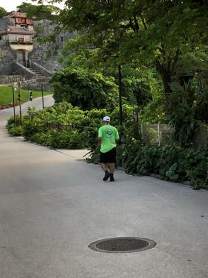
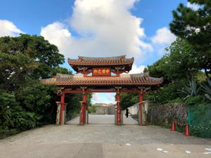

うるがいの話 ある日
最新:
重箱９品
うるがいとは 前提知識です
カニの画像をクリックすると『うるがいの話』サイトを表示します

|
うるがい(ｳﾙｶﾞｲ urugai)とは、『もずくがに』の名前でとても大きくなります。
|

|
たながー（ﾀﾅｶﾞｰtanagaa）とは手長えびのことで、何種類かあり大きいのは車
エビぐらいになります。
|

|
ぶながー(bunagaa)とは、赤い髪の毛、赤い身体、そして身長は１ｍ２０ｃｍ
ぐらい、川の蟹を食べているの目撃された。場所は沖縄県国頭郡大宜味村のと
ある村僕の隣近所に住んでいる爺さんから、聞いた話です。
|
2021年08月22日 (日）重箱９品
21:07


お盆の供え物の重箱９品を、イオンのドライブスルーで受け取る。ヨメが確認
すると７品（ヨメの実家用に重箱７品も注文していた）！、ただし値札は９品
イオンに連絡する、届けますか？というが、イオンも大変なので９品と交換し
に直ちにイオンへ行く。９時前から準備でパタパタしてスミマセンと謝ってい
た、ま、誰にでもミスはあるし。昨日家にきた子供が、ＰＣＲ検査の関連で保
険所の若い人がミスで、ひどく怒られていたという話を聞いたばかりである。
今読んでいる、『捨ててこそ得る―浄土三部経』から
定年退職後に、家でぶらぶらしている男性のことを、「粗大ゴミ」とよぶ風潮
もあります。
おお、オイじゃ！
人間が生きていく上において四苦八苦に悩まねばならない事実は、苦の内容に
相違はあっても、釈尊の時代と現代と比べて基本的にはいささかも変わりはな
い、すると「こうした苦しみから脱却して、不安のない人生を送るためにはど
うしたらよいか、とその方法を説くのを目的とする仏教という宗教が必要とな
る」。「この世 に生きている間に少しでも意味のある毎日を送るためにこそ、
死後の世界の存在を信ずることが重要になる」。また誤解されがちな「本願他
力」や「西方極楽浄土」の切実な意味を著者は説く。「病を治す神もあろうが
、治らぬままに救われる道がある」の標語の後半を深く読みとるように読者に
おすすめする。すると本書名を「捨ててこそ得る」と名づけた著者の願いが読
者の心に感受されるであろう。
ウン、そうなんだ。
夜７時半過ぎにご先祖様を送る、大宜味村の実家の時間帯を踏襲している。な
ぜ早いか、ウークイを済んだら那覇に帰る私達家族が、遅くならないようにで
ある。もう、そこは考えなくてもいい筈だが・・・。